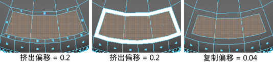

复制面选项(Duplicate Faces Options)
使用这些选项可设置在选择
“编辑网格 > 复制”(Edit Mesh > Duplicate)
时发生的情况。
分离复制的面
复制后自动分隔面。复制面分离到自己的单独对象中。不会影响网格中的任何已存在的壳。
偏移
输入值以偏移复制的面的边。此处还显示用于提取和挤出面的偏移以供比较。该选项可用于对使用
“提取”(Extract)
生成的挤出、裁切对象围绕面制作倒角效果，以及均匀缩放复制的面。

相关主题
复制多边形面
父主题：
“编辑网格”(Edit Mesh)菜单